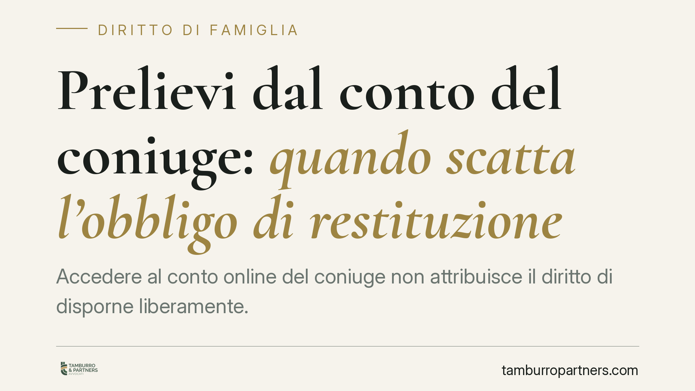

Prelievi dal conto del coniuge: quando scatta l'obbligo di restituzione
Accedere al conto online del coniuge non attribuisce il diritto di disporne liberamente. Una recente pronuncia della Corte di Cassazione ha condannato un marito a restituire alla moglie le somme prelevate dal conto personale di lei e impiegate per fini propri. La vicenda ribadisce un principio spesso frainteso: la conoscenza tecnica delle credenziali non coincide con la titolarità del denaro.

Il caso
Un marito aveva prelevato circa 19.000 euro dal conto corrente online intestato esclusivamente alla moglie, utilizzando le credenziali di accesso di cui disponeva. Le somme risultavano impiegate per scopi personali, in assenza di accordi tra i coniugi e senza destinazione ai bisogni della famiglia.
La Corte di Cassazione ha confermato la condanna alla restituzione. Il punto giuridico è netto: la disponibilità *tecnica* di un conto — cioè il fatto di conoscerne le password — non si traduce in un *diritto* a disporre delle somme che vi sono depositate.
Inquadramento normativo
L'obbligo di contribuzione ai bisogni della famiglia è disciplinato dagli articoli 143 e 144 del Codice civile. L'art. 143 c.c. pone a carico di entrambi i coniugi l'obbligo di contribuire ai bisogni della famiglia in relazione alle proprie sostanze e capacità; l'art. 144 c.c. affida a entrambi la concordata definizione dell'indirizzo della vita familiare.
Attenzione a un equivoco frequente: la comunione legale dei beni (art. 177 c.c.) riguarda gli acquisti compiuti durante il matrimonio, non i saldi dei conti correnti personali. Il denaro depositato su un conto intestato a un solo coniuge resta nella sua disponibilità giuridica, salvo diversa prova.
Sul piano dell'azione restitutoria, lo strumento principale è la ripetizione dell'indebito ex art. 2033 c.c.: chi ha eseguito un pagamento non dovuto — o, più in generale, chi ha incamerato somme senza titolo — è tenuto a restituirle. L'arricchimento senza causa ex art. 2041 c.c. è invece un'azione sussidiaria: ai sensi dell'art. 2042 c.c., è esperibile soltanto quando il danneggiato non disponga di altra azione per farsi indennizzare. Chi preleva dal conto altrui, dunque, non può trincerarsi dietro l'uso delle credenziali: se le somme non erano dovute e non sono state destinate ai bisogni familiari, la restituzione è l'esito ordinario.
Implicazioni pratiche
Il profilo decisivo è probatorio. Chi ha prelevato denaro dal conto del coniuge e intende sottrarsi alla restituzione deve dimostrare il titolo che giustifica l'operazione: un accordo, una donazione, oppure l'impiego delle somme per i bisogni della famiglia. In mancanza di prova, il prelievo resta privo di causa e va restituito.
Questo assetto pesa in particolare nelle fasi di crisi coniugale, quando l'accesso informale ai conti del partner — tollerato durante la convivenza serena — può trasformarsi in una condotta contestabile. La semplice abitudine di operare sul conto altrui non consolida alcun diritto.
Va inoltre distinto il piano dei rapporti patrimoniali tra coniugi da quello, eventuale, della rilevanza penale di accessi o operazioni non autorizzate: sono valutazioni separate, che richiedono ciascuna un esame dedicato.
Cosa fare in concreto
- Tracciate le movimentazioni sui conti personali e conservate la documentazione bancaria: in sede restitutoria la prova documentale è determinante.
- Formalizzate gli accordi su versamenti, prelievi o impieghi comuni di somme intestate a un solo coniuge, preferendo la forma scritta.
- In caso di crisi coniugale, interrompete l'uso informale delle credenziali del partner e modificate tempestivamente le password dei conti personali.
- Verificate il regime patrimoniale applicabile (comunione o separazione) per comprendere cosa ricada nel patrimonio comune e cosa resti individuale.
- Prima di operare su patrimoni intestati al coniuge è opportuno un corretto inquadramento della destinazione delle somme e degli oneri probatori che ne derivano.
In sintesi
Conoscere le password non è disporre del denaro. Il saldo di un conto personale non diventa comune per il solo fatto del matrimonio, e chi preleva senza titolo è tenuto a restituire. La chiave di ogni contestazione resta la prova della destinazione delle somme ai bisogni della famiglia o di un accordo tra i coniugi.
Contributo informativo a cura di Tamburro & Partners Avvocati - Avv. Giuseppe Tamburro. Non costituisce parere legale.
Ogni famiglia ha il suo equilibrio.
Separazione, divorzio, affidamento, assegno: se vuoi un confronto riservato su una specifica situazione, scrivi allo studio. Ti rispondiamo entro un giorno lavorativo.